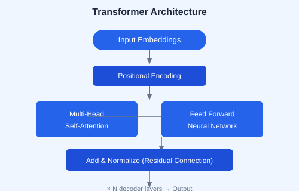

← Back to Tutorials

Core AI Engineering: A Complete Guide
A comprehensive curriculum covering the full AI engineer stack  from LLM products and multi-modal chatbots to HuggingFace, RAG, fine-tuning, and autonomous multi-agent systems. Each chapter includes explanations, code examples, diagrams, and hands-on exercises.
Table of Contents
1. Build Your First LLM Product Ollama, LLM types, transformers, business apps, streaming 2. Multi-Modal Chatbot LangChain, Gradio, tool calling, DALL-E, TTS, SQLite agents 3. Open-Source Gen AI with HuggingFace Pipelines, tokenizers, transformers, quantization, Whisper, synthetic data 4. LLM Showdown Scaling laws, benchmarks, code gen, model selection, eval metrics 5. Mastering RAG Vector embeddings, LangChain, ChromaDB, evaluations, advanced RAG 6. ML to DL to Fine-Tuning XGBoost, PyTorch, SFT, frontier model fine-tuning 7. Fine-Tuned Open-Source Models QLoRA, adapters, TRL, W&B, inference evaluation 8. Autonomous Multi-Agent Systems Structured outputs, planning agents, Modal, deal scanner 9. Practice & Resources Quick guide, study plan, bootcamp, certificate path 10. References Glossary, cheatsheet, API reference
Start Learning →